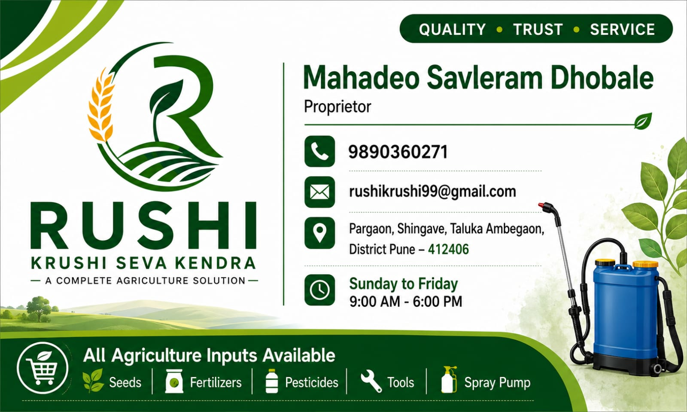

Agricultural knowledge, quality products and dependable support.

Krushi Seva Kendra is designed as a farmer-focused agricultural assistance portal that brings essential farming information and products together in one place.
Farmers can explore crop information, agricultural products, fertilizer categories, farming tools and support resources.
✓ Quality agricultural products
✓ Easy-to-understand crop information
✓ Farmer-focused support
✓ Seasonal farming guidance
Building reliable relationships with farmers and providing transparent information.
Encouraging responsible agricultural practices and better resource management.
Making useful agricultural information easy for farmers to understand and access.